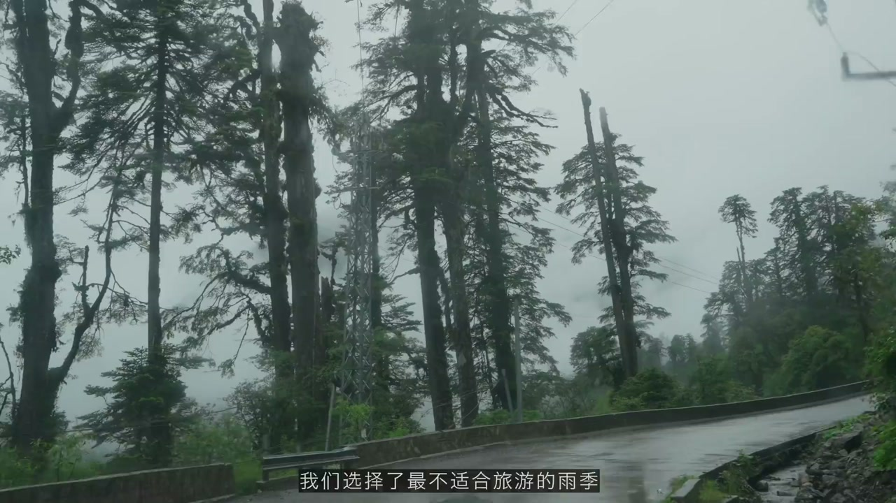
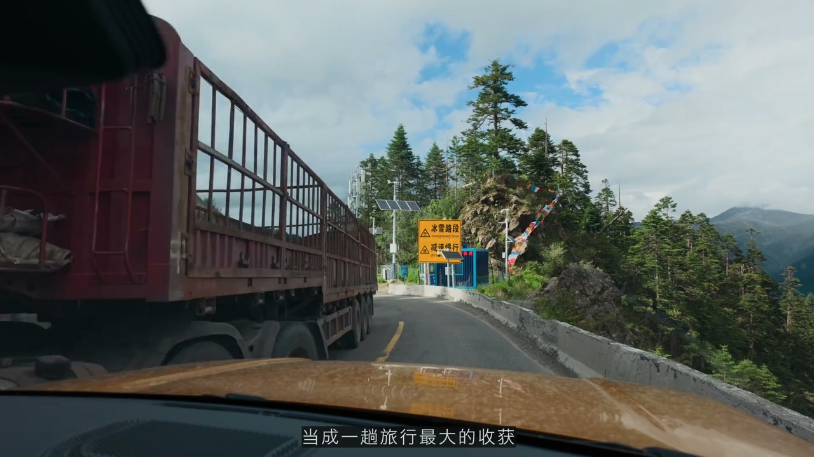
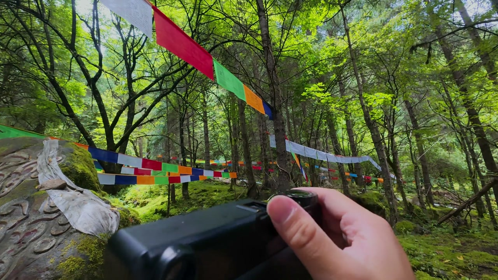
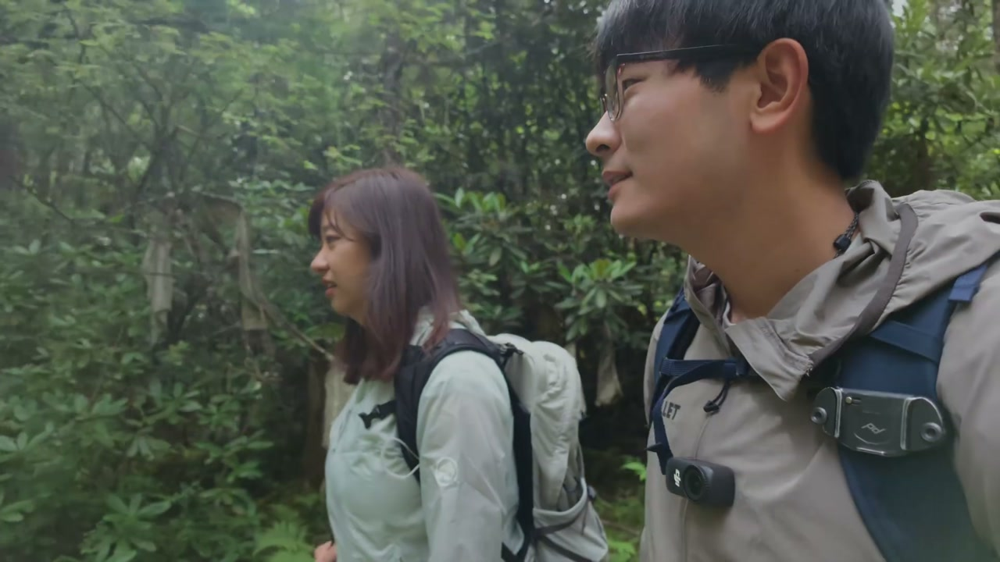
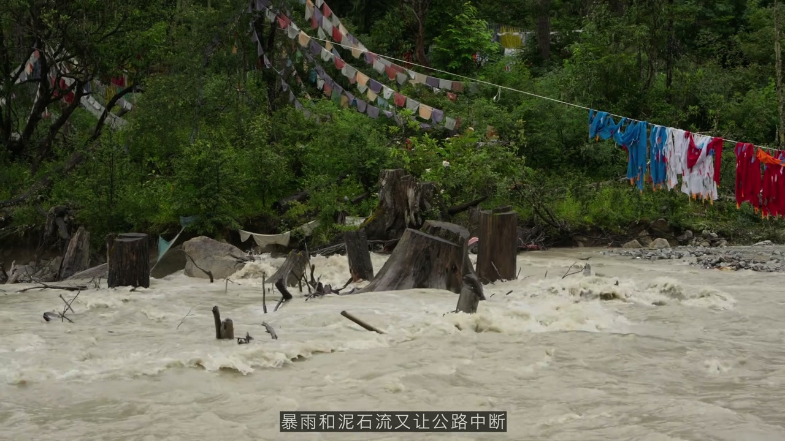
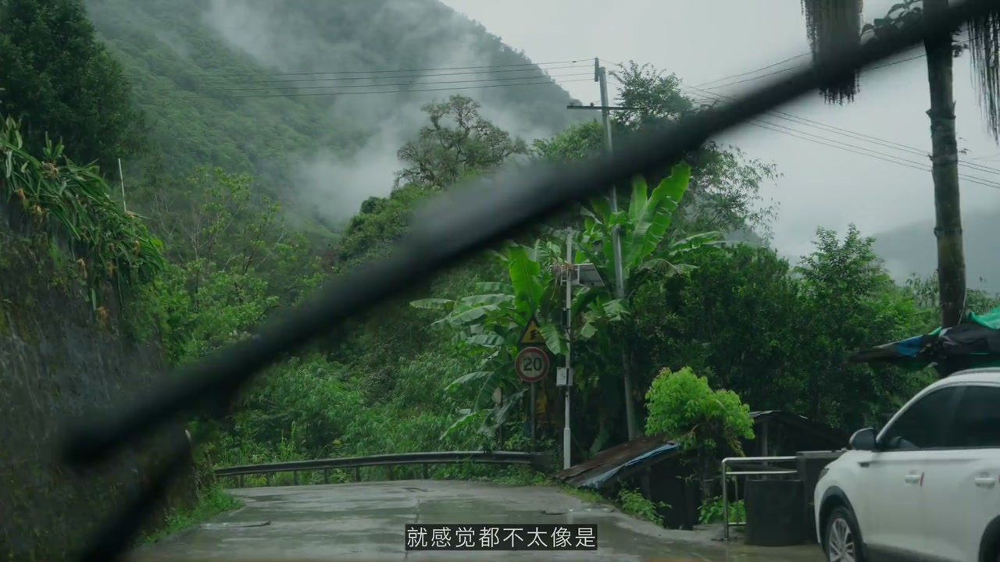
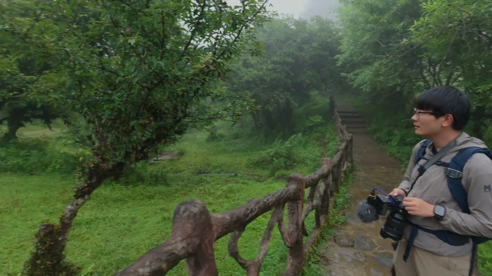

中国最后一个通公路的县城
00:00先在我身后的是中国最后一个通公路的县城——墨脱。这里的海拔大概1000米左右，而这边云里的是海拔7000多米的南迦巴瓦。我们这次的旅行将从雪山穿越到热带雨林。
00:202013年10月的最后一天，扎墨公路正式通车。这个位于藏南深处的'莲花秘境'终于和世界连接了起来。这是一条长度仅有117公里的路，但却修了48年。
00:40如果我们能从太空的视角看地球，你应该一眼就能发现墨脱这片区域太特别了。从南迦巴瓦峰顶到雅鲁藏布江下游的峡谷，将近7000米的落差让冰川和热带雨林被折叠进了这100多公里中。这里孕育了中国最丰富的生态，也造就了这条最艰难的公路。
01:10为了亲眼看看这其中的艰辛和风景，我们选择了最不适合旅游的雨季前往这里。我面前现在是足以塑造地形的猛烈的河流，直接把这个峡谷切开了一道口子。雨季多发山体滑坡。虽然目前公路的通行条件已经很好了，但我们还是保险起见租了一辆越野车，预计花费两天的时间抵达墨脱。

租车检查轮胎：人在同一个地方不能跌倒两次
01:30我们现在刚刚取了车、吃了饭、买好物资，正准备出发。又出现了突发的情况，带大家来看一看——人在同一个地方跌倒不能跌倒两次。大家看到了吗？这个轮胎我刚取到还没开，光头了。这都不是轮胎胎纹的警戒线，这连胎纹都磨没了。
02:00联系一下租车的公司，我再换一辆。大家租车一定要检查轮胎的寿命——耽误旅行的是小事，但如果路上爆胎打滑，真的有可能危及生命。
02:20运气还算比较好，给我叫车的那哥们他开着另一台车，我们反正在半个小时会合。会合的地点就是我们的第一个目的地——喇嘛岭寺。
02:40现在换这一辆车，这轮胎很新，左右胎还不一样，这是个AT胎，这是公路胎，不过看在胎纹都还算合格，我就不挑了。
- 轮胎胎纹磨光（光头胎）必须换
- 左右胎不同（AT胎+公路胎）但纹路合格可用
- 教训：取车前必须检查轮胎寿命
喇嘛岭寺：莲花秘境的能量场
03:00换好车，我向寺庙的方向走去。这里好漂亮，开满了鲜花。藏区有非常多特别的寺庙，喇嘛岭寺非常独特——你一进来就能感受到它的能量场不同。
03:20大家都知道西藏的信仰以佛教为主，而这座喇嘛岭寺供奉的就是把佛教传入西藏的重要人物——莲花生大师。相传他就曾在墨脱修行，墨脱也因此得名，意思就是'莲花秘境'。
03:40这里要脱掉鞋。喇嘛岭寺的主殿结构很有意思：佛像立在最中间的房间，周围有一圈宽阔的内转经道。来这里朝圣的人除了进里面的房间拜佛，也会在外侧的转经道长时间打坐冥想。
04:00因为佛像大都是不能拍摄的，所以内部的奥秘只能大家亲自去看。天气现在变得好快，下起了大雨。来这座寺庙的游客不多，大都是前来朝圣的藏族人，他们完全不赶时间，就静静地打坐。
04:30坐飞机直达海拔3000米的林芝，也让我和小螃蟹有了不同的感受。

雨季行车：高反与堵车
05:00我们也慢慢开着车，计划到波密去过夜。怎么样？现在感觉高反——就是我很困，睡觉才行。你知道刚刚最高多少吗？4600，刚刚到4600海拔，我说我怎么晕过去了，昏迷了。我们已经过了那个垭口了，那个是色季拉山垭口。
05:30正常如果说天气好的话是一座雪山，但现在虽然说我们这是雨季可能会看不到雪山，但是我觉得雨季我们去看西藏的热带雨林应该很带劲一点。
06:00通常我们总习惯把最壮观的风景当成一趟旅行最大的收获。可偏偏赶上了雨季，南迦巴瓦也许始终都不会露面。但我突然在想：如果没有那些最壮观的高光时刻，这样的旅行还会印象深刻吗？这次我想试着把目光放低一点，去感受那些微小细腻的风景。
06:30在3000多海拔堵了快三个小时了，遭了罪了。晚上8点我们这才刚开出（波密）一点点距离。终于在出发9个小时后、夜晚12点，我们抵达了扎墨公路的起点——波密县城过夜。
浊龙沟徒步：原始森林的能量
07:00大家早上好，经过一整天的堵车，我们终于抵达了波密县。波密被两边的山夹住，中间一条河流。今天非常悠闲地睡了一个大懒觉，睡到10点钟起来。今天我特别想去一个叫做浊龙沟的地方徒步。
07:30远远望去所有山都被笼罩在云雾中。对看风景来说这可能是最差的天气了，但只要我们放低视角、置身山野之中，就会有不同的发现。
08:00现在我们来到了位于波密县城旁边、开车只要10分钟的浊龙沟。这边其实是有一条来回大概16公里的徒步路线。这边有小木桥、小溪，生态非常非常好。然后这里面就有非常多的经幡，你一进到这边就会觉得超级神秘。
08:40这次我带了这两台相机，因为很久没有拍胶片了，所以就想带着了——这台 Contax（Machina？）然后这台 H26（A7R6？）。它也是索尼最新的全画幅、目前最高像素的机型，6680万像素，拍照片的动态范围达到了16档。这次所有的视频都会用这台相机来记录，因为它的续航也很长，混合拍照和视频一天只需要两块电池，散热性能也很优秀。

转经筒与玛尼石：祈福的能量
09:30我们继续往前走，可以发现越来越多的经幡。然后在这儿我发现了转经筒。一般像经幡、转经筒都会安置在河流的旁边，你看这个是水力转经筒——河水推动转经筒，微风吹动经幡。每次转动、每次飘扬，都如同一次诵经的颂词，也将祝福与慈悲带向远方。
10:00身处这样的森林中，仿佛能感受到源源不断的能量在治愈一切。
10:30看我面前的就是原始森林里的这块碑纹（玛尼石），有没有人认识它写的是什么？这块几乎和苔藓融为一体的石头叫做玛尼石，上面刻着佛教的祈愿文和六字真言。相比纸张和布料，石头能够承载这些文字更漫长的岁月——也许很多年以后人类不在了，这些祈愿仍会留在这里。
- 水力转经筒：河水推动，安置在河流旁
- 玛尼石：刻着祈愿文和六字真言的石头，比纸张布料承载更漫长的岁月
- 森林中的能量场：治愈一切
树葬区：把灵魂交还给自然
12:00现在我们到了灼龙寺，从灼龙寺往里面深处走一点，它徒步的终点是有一个叫做神铺的地方，然后我们待会还会经过树葬区。
12:30在这边的信仰里面有一种丧葬的方式，就是把人和树葬在一块。但那边是不能拍摄的——这个地方已经出现了谢绝一切拍照录像。大家我就把相机挂起来了，好，我们就感受吧。
13:00树葬并不是葬在土里，而是树上的一种安葬方式。主要是把夭折的孩子安置在木箱或瓮（骨瓮）中，然后悬挂于树干树杈之间。人们相信他们尚未来的（灵魂）依然纯净，把他们安放在树木间，意味着重新交换给自然。
13:30整片树葬区有种独特的场域：阳光仍会偶尔穿过树梢在地面投下一树树光斑，树枝垂满苔藓，溪水也温柔地缓缓流淌。我们刚刚经过了树葬区，一到这里面整个森林的样貌就更加幽秘了，会有很多箱子和桶绑在树上，然后还有很多小松鼠跑来跑去。
14:00我们也可能可以用AI的方式让大家知道里面大概是什么样子，但是又不会对它们不敬——它们是铺满着敬畏来的。
冥想与觉知
15:30因为之前多次来过藏区，所以我也略知冥想的坐姿——一般是这样盘腿坐着，手放在中间，然后可以把眼睛闭起来，让自己的思绪放空。
16:00冥想时有一件非常重要的事就是觉知。按照我自己的理解：人经由一个目标开始行动，但随着时间推移这种行动会变成一种惯性，你仍在往前走，但却忘记了出发的理由。而觉知就是找回自我——也不需要很高深，就只是重新注意到当下，听见自己的呼吸，感受自己的心跳，就已经足够了。
16:40很神奇，我第一次学冥想的时候，当场有好多人都不自觉地哭了，不知道为什么，我也是。然后有个人说他觉得身体暖暖的，有个人说他见到了他去世的小狗。
嘎龙拉隧道：52年修成的路
18:00我们现在已经到达墨脱的牌子了，大概114公里用14个小时。这短短100公里就要降到1000多的海拔，很神奇。今天外面的云雾真的是更加浓了，所以我们这次也不对看雪山抱什么希望。
19:00扎墨公路会先一路盘山而上，抵达海拔3700米的嘎龙寺，然后再进入嘎龙拉隧道就能抵达墨脱那一侧了。
20:00从来没见这么直、这么深不见底、一个灯都没有的隧道，而且现在里面全是雾。现在是3600米，车底在云里。全是大雾，史诗级的隧道变成了这个样子。现在全是这种S型的盘山公路，然后你会纳闷这个路是怎么修的，这也太恐怖了。
21:00在进入隧道前你还能看到一条盘山而上的老路，那是嘎龙拉隧道建成之前唯一通往墨脱的公路，始建于1975年。如果从1961年第一次勘探算起，为了打通这117公里，人们整整用了52年。
21:301993年汽车第一次开进墨脱，可没过多久暴雨和泥石流又让公路中断。直到95年以后，这条路也只能在每年短短几个月里勉强通行。它如此难以维系的原因是极其特殊的地形：从海拔4100多米的嘎龙拉垭口到1100多米的墨脱县城，短短几十公里高差超过3000米。
22:00来自印度洋的暖湿气流被雪山阻挡，在这里形成极其充沛的降雨——墨脱年平均降水日多达260天。洪水、滑坡、泥石流几乎年年发生。即使今天为了保证安全，车辆仍然实行'双进单出'的原则。而就在我们抵达的这一天，附近的察隅公路又因为暴雨发生灾害。所以即使在今天，能顺利抵达墨脱就是一件很了不起的成就了。

进入热带雨林
23:00我们现在就在墨脱境内了，离墨脱县还有70多公里。所以这就是传说中的热带雨林地区吗？跟我想象中的一模一样——人是森林啊，我的天啊。这是什么地方？我觉得它充分满足了我对于小说的想象——小说里面写的这种地方充满了迷障，然后感觉一进去就会万劫不复的地方。
23:40大家看这个苔藓长得这么这么的长，然后现在这个苔藓就在这儿，然后现在后面又是云雾直接笼罩在整片森林里面，这太特别了。
24:00前面还有很神奇的红色花，马上走两步看一下。这小花看起来好毒啊。如果我是动植物学家，应该会比现在兴奋100倍——墨脱记录着超过3000多种高等植物、超500种鸟类，甚至还发现过孟加拉虎。
24:30我决定用胶片记录这片热带雨林带给我的震撼。我面前现在是足以塑造地形的猛烈的河流，直接把这个峡谷切开了一道口子。我现在想要收录一下这个洪水的声音——现在声音非常大，但是因为 A7R6 更新了这一个32比特浮点音频，所以到现在我都没有收到爆音，怎么样声音都不会爆。
25:30这条银白色的河流就是雅鲁藏布江了，我们也正处于世界最深峡谷——雅鲁藏布大峡谷内部了。接下来的海拔会越来越低，直到1800米的位置，我们看见了这突然就出来芭蕉叶了——真到热带雨林了。

当地的芭蕉与野生桂皮
26:00看到芭蕉树之后，我一（下）车就感受到现在湿度都不一样了，多了一点那种热带的那种烘烤的感觉，好神奇，就像来到了格鲁德小镇。然后下面就有一些小商贩，这上面还有个瀑布。
26:30这香蕉是当地产的吗？对，当地的产香蕉，我们这里一年四季都产芭蕉。芭蕉还是香蕉，这里的都叫芭蕉。我能拿起来试试吗？这个真的是从这产的感觉，这不是普通香蕉吧。
27:00还有这些是野生桂皮，千百年的桂皮，好香啊。这是你们自己采的吗？我自己采的，这是我们族爷爷手里收的。这个真的跟我们平时吃的香蕉肯定是不一样的，它明显会软软很多，然后闻起来气味是一样的，它吃起来没有那么甜，然后带一点酸。这个超市有卖的，但是你吃起来有一股涩嘴（虎嘴）的感觉——我知道怎么描述这个涩味了，就是红酒的单宁。

- 当地芭蕉一年四季都产，软、微酸、带一点涩
- 野生桂皮：千百年树龄，当地人自己采摘
- 湿度变化：下车瞬间感受到热带烘烤感
抵达墨脱县城：莲花秘境
28:00路过了一个小村子，这感觉就不太像是通常我们见到的中国的小村的样貌。我好像看到墨脱了——它居然是在这么一个山上，感觉像仙境一样。终于在八个小时后我们抵达了墨脱县城。
28:30这里就是隐藏在藏东南的莲花秘境，也是'墨脱'这个名字在藏语里的含义。珞巴族和门巴族世代生活在这里。而如果追溯到这片土地上最早的人类活动，至少可以回到数千年前的新石器时代。
29:00很难想象在公路出现以前，人们究竟是怎样翻越雪山和洪流，和外面的世界相连。你仅仅只是抵达这里，路上见到的风景都会给你非常非常多的惊喜。
29:30我们终于是正式来到了墨脱县城。这边的房子长得还是不太一样，它是有藏区的那种感觉，就是白色的墙体但是红色的装饰，窗户也不一样。新华书店，这也是一个山城，这个县城真的挺大的，什么东西都有。
石锅鸡：所有人都赞不绝口
30:00墨脱据说它的美食大家来都会吃、所有人都赞不绝口——晚上一定要吃一顿这个石锅鸡，看有多好吃。反正就是咱先吃吧。我们是以石锅为名，然后鸡它的话用石锅比较滋补养生。
30:40你现在期待已久的石锅鸡，闻着好香啊——这种药膳的香味，这里面都是菌类，看起来确实非常的补啊。它这个鸡本身就是黄黄的，非常的入味、非常的鲜。我们的是小锅，小锅是两百零几，还会送一个红糖糍粑，然后送了方便面还有几根菜。不便宜啊，但是我觉得在这么偏远的地方，主要味道确实真的很好。
31:30通公路后墨脱的人口从一万人增长到现在的近一万五千人。不知道是不是藏族人不擅长做生意，像这种商铺大都是外来人口经营。第二天我们又来到这家餐厅吃饭，从老板的口中得知了这里以前的样子——以前路都不通，水泥都运不进来。
32:00听说以前物价挺夸张的，他们菜市场卖鱼，老百姓拿钱你自己要哪张拿哪张——都不认识那个钱该怎么花。像他们下面开超市的，以前零食、小吃、啤酒都是靠背进来的。
32:30第三年之前没通公路的话，估计坐一段车还得徒步一段路，翻山翻山进来，翻那个嘎龙拉雪山。一次翻嘎龙拉雪山，走那边走那个（派墨公路）就是徒步进来，直线距离都有80公里。

徒步进藏：以前唯一的出路
33:00在没有通车的时候，徒步真就是唯一走向外面的办法。第一关要跨越雅鲁藏布江——波涛汹涌的江流会吞噬掉进去的一切，所以人们只能通过这样的藤桥过河。有钢丝绳之后过河的方式看起来更吓人了，据说冒出来的铁丝会把手扎得千疮百孔。
33:40第二关是穿越充满毒蛇、猛兽、蚂蟥的热带雨林。最后一关还要翻越4000多米的雪山垭口。整条路线大约要4到5天才能走完，这样的危险性和强度远超普通人的极限。
34:20算了吧，我们还是不要徒步。还是别徒步，还有蟒蛇——蟒蛇是把你勒死的，别的蛇是给你咬死的，你选一个吧。前段时间他们在外面带了一根可能有20多斤重的眼睛（王）蛇。
仁清崩寺：供灯与莲花生法器
35:00那我们就决定先去仁清崩寺看看。沿着县城入口附近的盘山公路大约半个小时就到了，现在海拔已经到2000多了。这个雾是越来越浓了，只有个20米，这太带劲了。我觉得我们在最好的时间来到了这里。
35:40转山接下来有5公里的徒步。马黄路——对啊，我们反正螃蟹刚刚已经满了盐了，有点吓人了。5公里你确定吗？5公里啊，修十（个小时）？两个多小时就走完，我慢慢走慢慢玩呗。
36:30我们现在往仁清崩寺走，然后路上有很多小狗狗给我们引路呢。先到寺里来看一看。
37:00燃灯房里面的灯好像从来不会熄灭的。你好你好，这边的灯是不是都不灭？供灯啊，对啊，供灯这个是一辈一辈。哦，可以花钱供灯啊。这个灯是一直不灭、一直有的。可以自己点——我从来没有点过，好咱点一个。我自己点自己点，一个星期都……
38:30我们看到这么多寺庙，从来没有人跟我说过可以供灯，原来这些灯是这么来的。这种我觉得就是缘分——像我们之前去革念那边的时候就有僧人看到我们，觉得很有缘分就给了我们护身符，还给我们头上点了那个守护。
39:30我承认一个错误：这边其实有一个非常厉害的宝物，就是那个莲花生（法器），但它好像只有上午一个固定的时间段才能看——10点到11点，但那个时候我们已经错过了。不过好像现在刚好有他们的亲戚来，打了电话让他们过来可以展示，所以我们只要在这边等，可能就可以看到。
40:00而且那个都不能拍照的。我们用AI大致展示一下这件法器的样貌：由青铜铸成，平时呈八瓣莲花的形态，每一片花瓣上都供奉着一尊佛像，十分精致。据说这样的镇寺之宝世界上仅存五尊，超级精美。
41:00大家都拿着自己的佛珠来开光，他们真的非常虔诚。然后大师就说：这家带着什么东西都别开光。然后另一次就把他（朋友）的相机拿去开光了。然后我实在是……无常。路——你的小天才开的光了，现在你得戴一辈子了，我真的服了。
41:30我实在是在路上觉得我可能这边只会来这里一次，但是我觉得我还会再来的，从刚才那瞬间就感到很深深的感动。
- 供灯：燃灯房的灯不灭，可花钱为自己点一盏
- 莲花生法器：青铜八瓣莲花，每瓣供一尊佛，世界仅存五尊
- 缘分：僧人会看缘分给护身符、给开光
转山遇马蝗：此生最大的惊吓
42:30我们现在要开始徒步了，但是我有个问题：就这么大的雾什么都看不见。药子就是雾啊——热带雨林加上这个雾是最棒的，像不像神庙逃亡？这边有很多的马蝗，但是我有晕血，所以我有个问题：假如说有十只马蝗同时吸你的血，然后把你给吸晕了，我该怎么办？那你就跑吧。但是如果我不管你的话，你会被吸干的，一定的。
43:30我们现在听到好奇怪的声音，还是鸟呢。这边有很多鸟。有响尾蛇吗？宝宝我不敢走了，我真的现在起鸡皮疙瘩了，出于生理上的恐惧。没看那个画面吧？我不敢那么近看，你比我胆大。
44:00左眼睛上面有一只巨蚂蟥，我以为是什么病，一个卷曲的、长得贼胖。另外它右眼睛上有两只——那两只已经没在吸血了，我把它眼睛上弄掉了之后，它脸上还有一只，往它眼睛里爬，好吓人。我们回去吧，我不转了。
44:30小狗狗身上也爬满了蚂蟥，我实在是怕，还是把画面全都切掉了。我们发现了一个小通道，你现在感觉如何？我心跳一直130。这么怕？这比我的大蜘蛛还……全是这种我怕的东西。我现在看比我晕针之前的心跳还快，你真的被吓到吧。你在心率多少？150。
45:30这里好像是大鹏神鸟的洞府，然后据说大鹏神鸟想要飞回印度，但是什么东西不走了。回吧，求你了，不走了。
46:00墨脱的蚂蟥实在是太出名了，该来的还是来了，我心里的最后防线被击溃了。希望接下来的画面不要吓到大家。我刚过下（台阶）了，有一个蚂蟥直接掉到我身上，然后在我这个肩带的上面，我以为是线。
46:40它（蚂蟥）会自动锁（目标）的——你人进来吐出二氧化碳，然后你身上的热量，它和你一样感觉到，它主要是可以从树上跳到头上来。太恐怖了，我可能受到了此生最大的惊吓。
- 防蚂蟥：满盐（撒盐）、紧裤腿、时刻检查身上
- 蚂蟥感知：二氧化碳+热量定位，可从树上跳落
- 伙伴心跳飙到130-150
回望：处处都是高光
47:00这次旅行又因为拉肚子严重脱水，整个人陷入虚脱。没想到这趟墨脱之旅最后会以这样一种特别的方式结束。回过头来看，这次旅行并没有看见日照金山那样的高光，但又处处都是高光。
47:20我怀念切削出幽深峡谷的雅鲁藏布江，怀念第一次看见热带雨林的那种兴奋，也怀念县城里的那锅鸡汤。我发现做视频这件事让我的旅行更特别了——我记录下了所有印象深刻的瞬间，甚至只是在剪辑时看着这些画面，也能再次回到当时的自己，那种兴奋、恐惧等所有的情绪又会重新涌上心头。
47:40人的记忆会随着时间渐渐变得朦胧，最后只剩下一些抽象的感觉。而摄影是一件很神奇的事——不论过去多久，当我再次看见这些画面，依然会像穿越了时间一样，仿佛自己还站在那里。摄影证明了我曾身处其中，同时也证明了我早已不在那里。
48:00回忆完这段旅程，下一次我们又会一起穿越到哪里呢？请不吝点赞、订阅、转发、打赏，支持明镜与点点栏目。